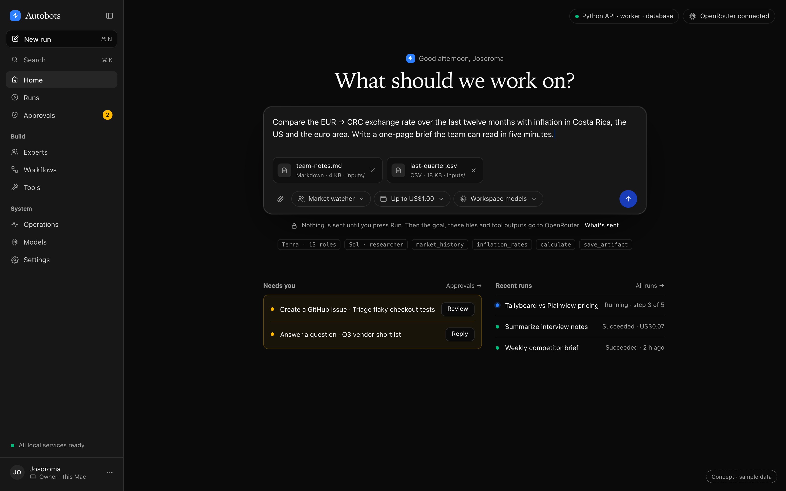
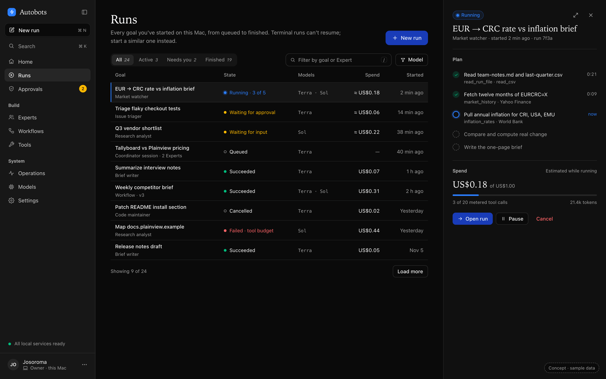
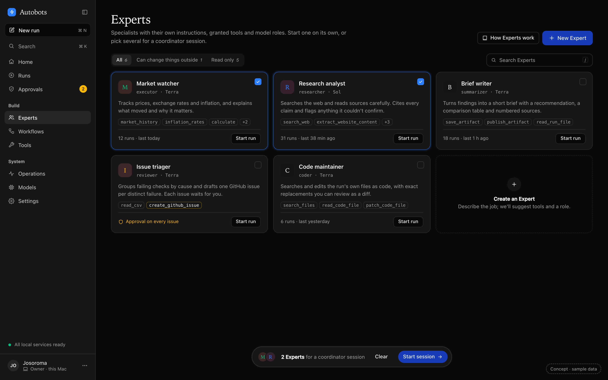
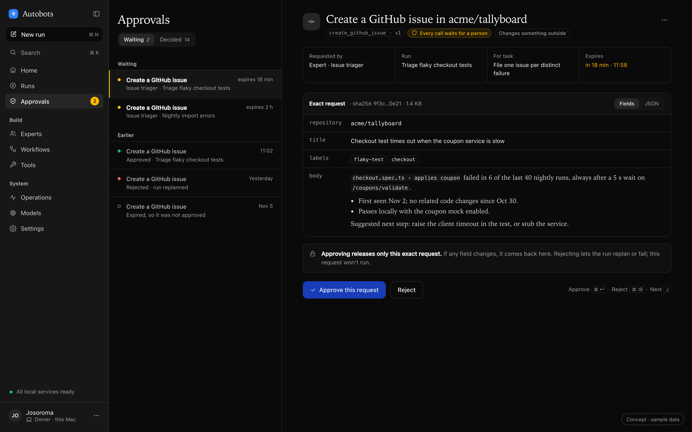
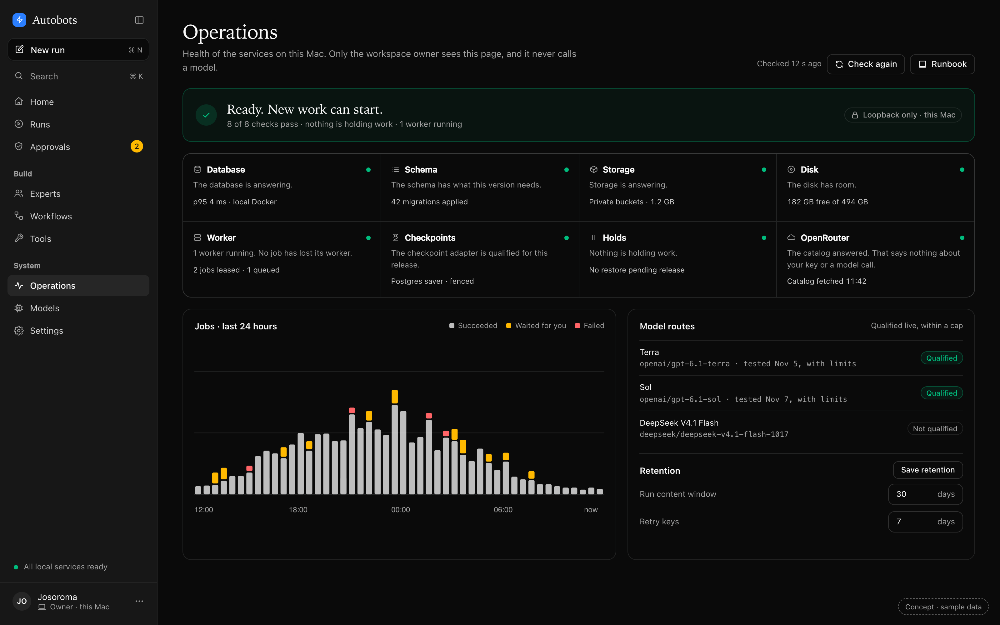
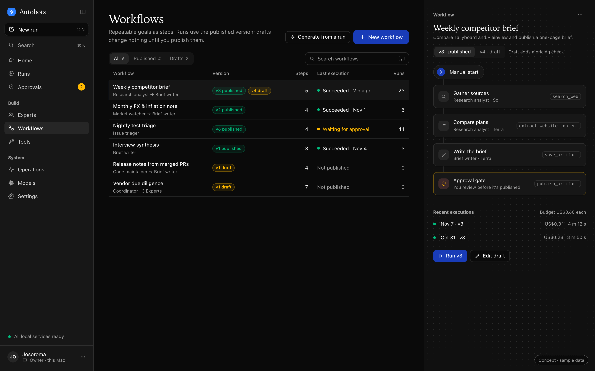
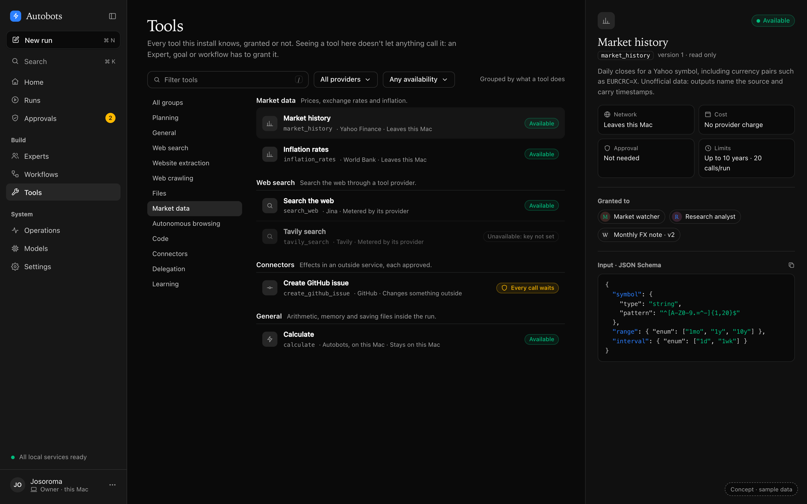
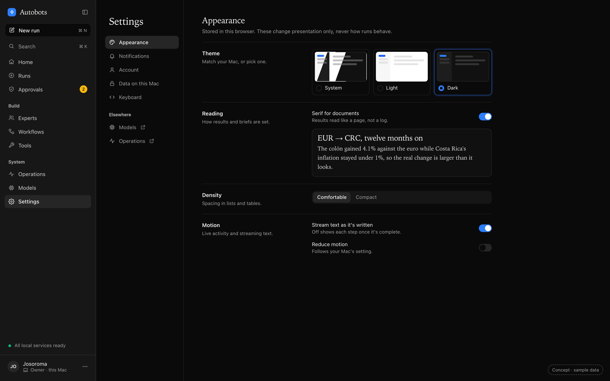
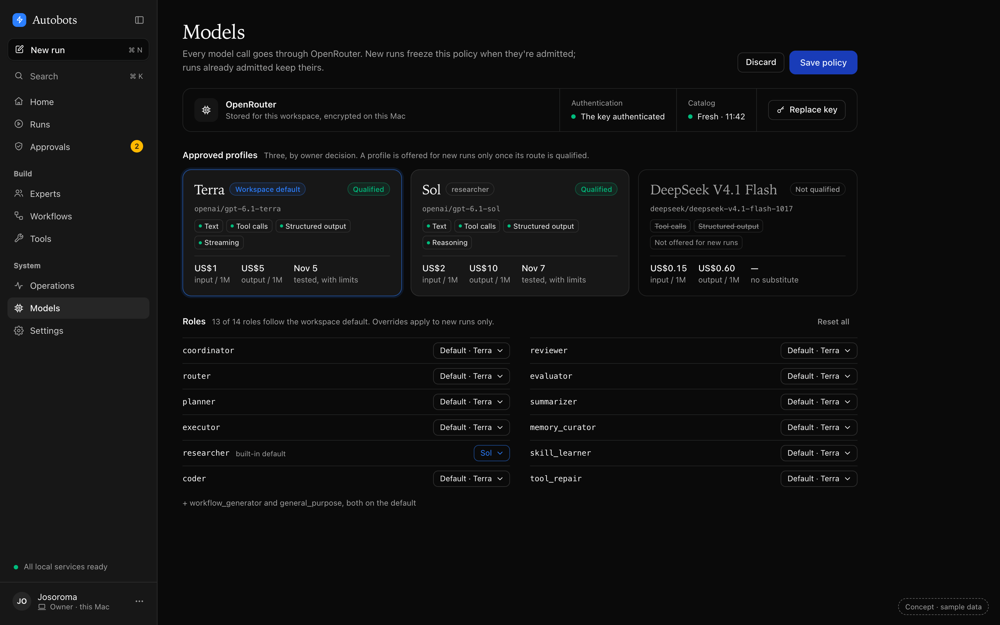

One screen for each of the nine sections in the current sidebar, imagined at the polish of the best AI products: a calm composer, tables that read at a glance, side panels instead of page hops, and reading type for anything you'll read. Built as HTML on the exact Luma tokens, in dark and light.
A centered composer carries the Expert, budget and models inline, with attached files as chips. What the run would use and what leaves the Mac sit right under it; what needs you and recent runs come after.

A filterable table with the canonical states in words and color, estimated versus reported spend, and a side panel showing the selected run's plan, spend meter and controls.

Cards show each Expert's role, model and granted tools. Pick several and a floating dock starts a coordinator session; Experts that change something outside say so on the card.

An inbox of waiting and decided requests beside the full request: who asked, for which run and task, when it expires, every field, and what approving releases.

A one-line verdict, eight checks in the product's own wording, a day of jobs, the qualified model routes and retention, on one owner-only page that never calls a model.

Published and draft versions are explicit in the list. The side panel previews the published flow on a dotted canvas, its approval gate and recent executions.

Tools grouped by what they do, each with where data goes, cost, approval and availability. The detail panel adds limits, who it's granted to and its input schema.

Appearance with visual theme choices, reading type, density and motion. Models and Operations stay their own sections and are linked, not nested.

The OpenRouter connection with separate statuses, the three approved profiles with capabilities, prices and qualification, and per-role overrides with the researcher on Sol.
